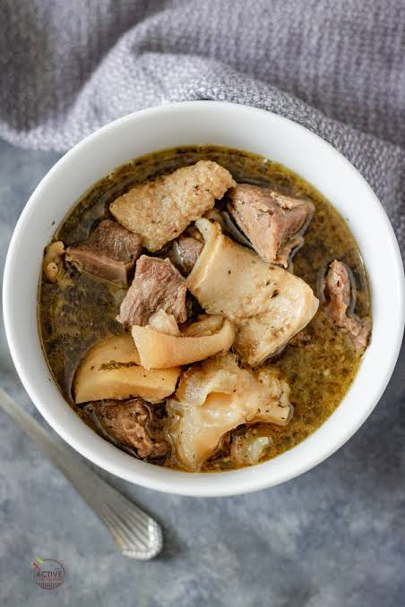

Home
Pepper Soup

Description
A light, fiery, and deeply aromatic broth infused with traditional West African spices like ehuru (calabash nutmeg) and uda (negro pepper). It is a comforting dish perfect for rainy days or social gatherings.
Ingredients
- The Main Protein: 1kg chicken pieces (preferably hard/local chicken) or fresh catfish cutlets
- Spices: 2 tablespoons of pre-mixed pepper soup spice (ehuru, uda, and uziza blend), 1 tablespoon ground crayfish, and 2 scotch bonnet peppers (finely chopped)
- Fresh Herbs: 1 bunch of fresh scent leaves or efirin (or substitute with basil) and 1 medium onion (chopped)
Steps
- Season the Protein: Place the chicken or fish in a pot. Add the chopped onions, stock cubes, and salt. Cook on medium heat for 5 minutes in its own juices to absorb flavor.
- Add Water and Spices: Pour in enough water to generously submerge the meat (about 1.5 liters). Stir in the pepper soup spice, ground crayfish, and chopped scotch bonnets.
- Simmer the Broth: Cover and boil on medium heat. If using chicken, cook for 30–40 minutes until tender. If using catfish, reduce cooking time to 15 minutes so the fish does not break apart.
- Finish with Herbs: Taste the broth and adjust seasoning if needed. Stir in the finely chopped scent leaves or basil, let it simmer for 2 more minutes to release the herbal oils, and serve hot